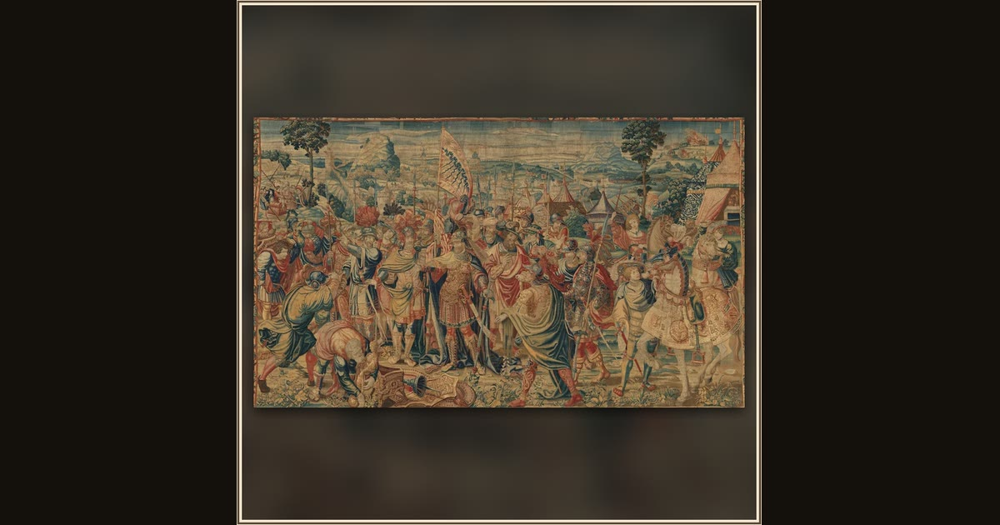

Agamemnon musters the Greek troops at Aulis from the “Story of Iphigenia”
Design attributed to Pieter Coecke van Aelst; woven under the direction of Willem de Kempeneer · 1535–48 · met
A tapestry shows armed Greeks, horses, and banners gathered at Aulis; the chorus recalls the Achaean force stalled there by opposing winds and dwindling stores (190). Explore its place in Aeschylus's Plays, Agamemnon, line 184.